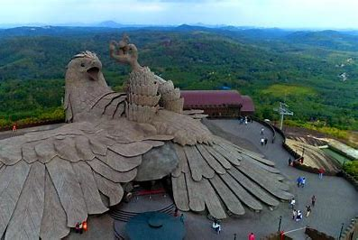
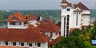
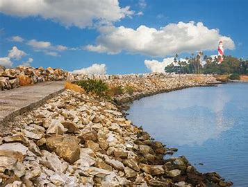

Kollam also known by its former name Quilon , is an ancient seaport and city on the Malabar Coast of India bordering the Laccadive Sea, which is a part of the Arabian Sea. It is 71 km (44 mi) north of the state capital Thiruvananthapuram. The city is on the banks of Ashtamudi Lake and the Kallada river. It is the headquarters of the Kollam district. Kollam is the fourth largest city in Kerala and is known for cashew processing and coir manufacturing. It is the southern gateway to the Backwaters of Kerala and is a prominent tourist destination. Kollam has a strong commercial reputation since ancient times. The Arabs, Phoenicians, Chinese, Ethiopians, Syrians, Jews, Chaldeans and Romans have all engaged in trade at the port of Kollam for millennia
Famous Spots

Jatayu Earth's Centre

Thevally Palace

Kollam Beach

Thenmala